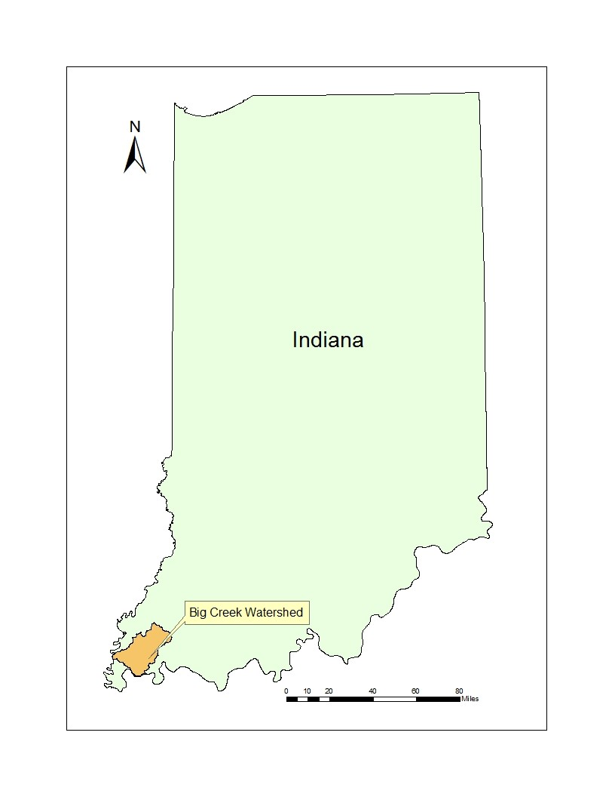
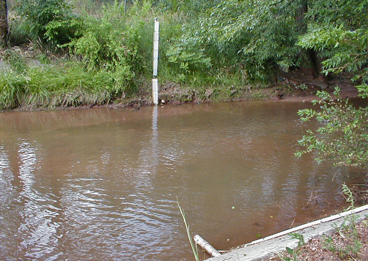
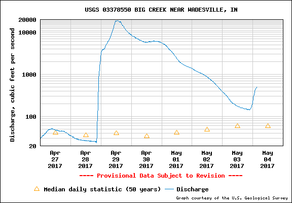
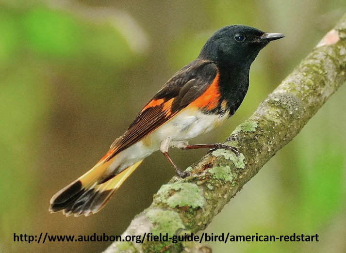
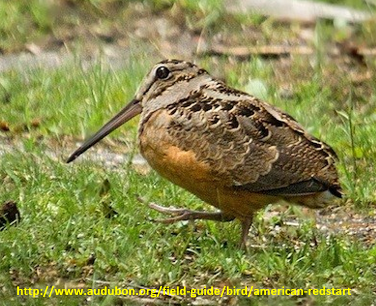
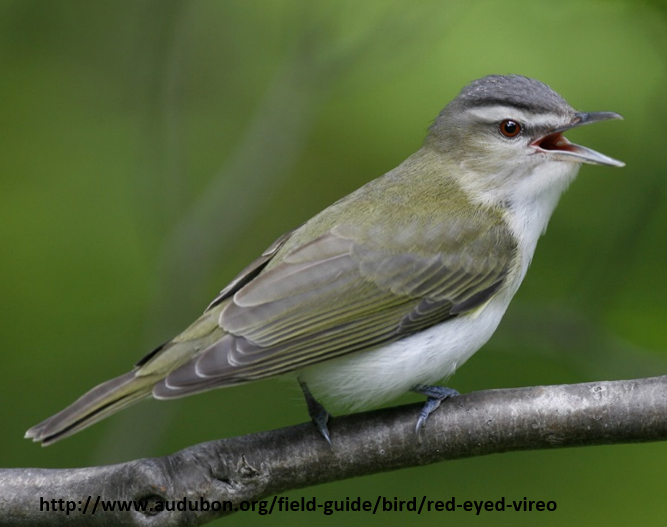
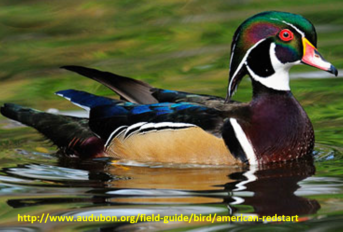

Study Area
Study Area
Big Creek Watershed
Big Watershed is located in Southwestern Indiana. It is integrated by Big Creek Watershed (BCW) (HUC: 0512011307), and two sub-watersheds within the western part of the Bayou Creek Watershed (BaCW) (HUC: 0514020206). Both watersheds in the study area encompass a total area of 784.6 km2.

The studied area lies in three of Indiana’s counties: Posey, Vanderburgh, and Gibson. These counties account for 70.1%, 22.9%, and 7.0% of the study area, respectively.
USGS straem stations employed for Hydrological Maodelling
Big Creek USGS near to Wadesville
This station is located at latitude: 38°04'59.2" N, longitude: 87°46'10.7" W. This stream station is located almost in the middle of Big Creek route and encompass 269.95 Km2.
Discharge records for last months are shown below.
Potential Wetland Areas in Big Creek Watershed
Based on Babbar's methodology, potential-wetlands suitable for four focused bird-species were obtained.
American Redstart
The American redstart is a New World warbler. It is unrelated to the Old World redstarts.
American Woodcock
The American woodcock, sometimes colloquially referred to as the timberdoodle, is a small chunky shorebird species found primarily in the eastern half of North America.
Red-eyed Vireo
The red-eyed vireo is a small American songbird, 13–14 cm in length. It is somewhat warbler-like but not closely related to the New World warblers. Common across its vast range, this species is not considered threatened by the IUCN.
Wood Duck
The wood duck or Carolina duck is a species of perching duck found in North America. It is one of the most colorful North American waterfowl.
